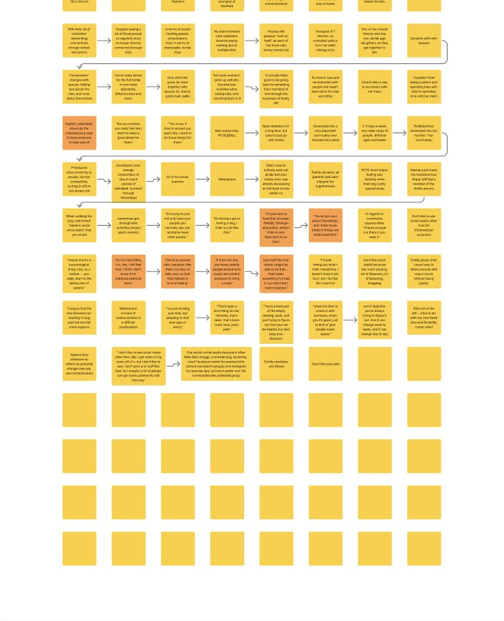
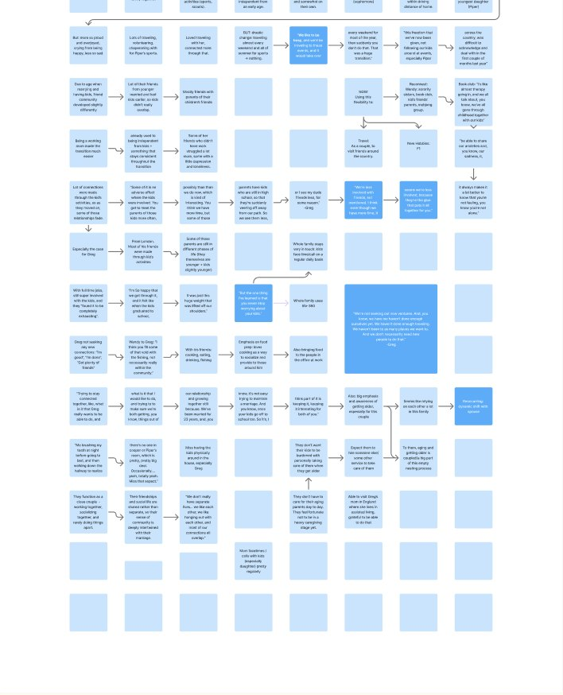
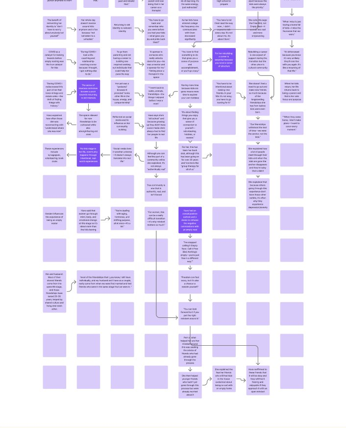

Needfinding
Four founders, four hours of conversation.
We ran four 60-minute interviews with prospective mentors, then took notes, analysis and synthesis into FigJam. Each founder became a persona we kept returning to.





Interview notes in FigJam, one board per conversation.